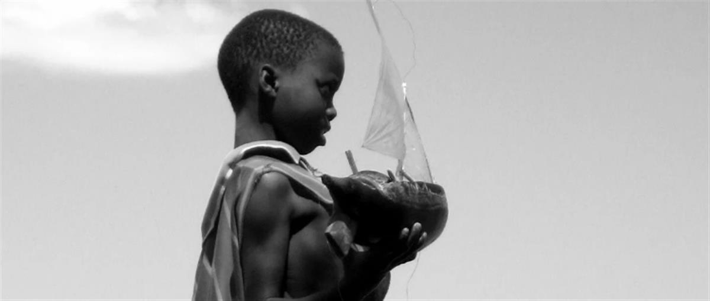

The Flipflopi dhow navigates the Kenya coastline during its first expedition in 2019. Photo: Finnegan Flint
SOURCE: MUSEUM FOR THE UN - UN LIVE
Setting sail to beat plastic pollution
This March, the world’s first recycled plastic boat – the FlipFlopi – sets sail on its newest voyage around Lake Victoria. Over three weeks it will circumnavigate Africa’s largest freshwater ecosystem from Kisumu, to Kenya and Uganda, and finishing in Mwanza, Tanzania. Its aim is to highlight local circular economy solutions and climate and pollution issues affecting Lake Victoria, inspiring people and organisations towards collaboration and circular economy solutions that could transform its future.
As preparations for the iconic dhow’s journey gather pace, our CEO, Molly Fannon recalls her own personal encounters with the power of dhow-making as cultural heritage in Mozambique, East Africa, across the Indian Ocean and beyond. And, most importantly, how rooting in tradition can shape the future.
In 2008 I was traveling on my way to work at Ilha de Moçambique – a UNESCO World Heritage site in the north of the country. We stopped to break the journey and I came upon a young boy playing by the seaside with a dhow he had built himself from recycled trash. He was splashing in the water as he sailed it and then, hearing the shouting of fishermen returning from a day at sea, he grabbed his toy and stopped to look out at the larger ship and its sailors. I quickly snapped a photo of him in that moment, and that picture has remained one of my most treasured.

“Watching this young inventor and master dhow-builder playing on the shores of Northern Mozambique was a highlight of my time at working at Ilha de Mocambique, a UNESCO World Heritage site, in 2008.” Photo: Molly Fannon
On that day – and on many others since – I’ve witnessed first-hand how much pride and love there is in centuries-long traditional dhow building. In the years since, across the maritime communities of Eastern and Southern Africa and the Gulf, I’ve chatted with dhow builders as they hammer cording into their wooden vessels, watched as sailors depart for a day of fishing, listened as elders recount childhoods of pearling, and seen dhows claim centre stage in new national museums of the region. It is clear the dhow is an incredible example of how cultural heritage can spark immense pride. Given the connections the dhow made possible across the entire Indian Ocean, it is also an important symbol of just how interconnected we all are.
My time in Eastern Africa and Mozambique in 2008 inspired a huge year for me, personally. I finally took a leap of faith and changed the course of my career on a hunch I had been toying with for years – that culture had a unique – and largely untapped – power to inspire people to think differently about the world, to connect people across geographies, to help us all imagine and then build a more sustainable and hopeful future for us all.
We are thrilled to be partnering with The FlipFlopi Project as this unique dhow embarks on its second voyage. UN Live’s vision is to work with organisations just like FlipFlopi, the world over, to explore how we can invoke the power of culture and creativity to inspire mass action – of everyday people – in support of the Sustainable Development Goals.
The Flipflopi Project’s work to harness the power of cultural heritage to inspire people, policy makers, and businesses to engage in serious discussion and action on single-use plastic and the environment is a prime example of just how powerful this approach to change can be. And the fact that is has been built upon the entrepreneurial spirit and dhow-building expertise of its local team of leaders is what makes this project even more impactful.
Addressing the problem of plastics in our marine ecosystems is critical for our health, our food security, the biodiversity of our planet. If centuries-old traditions can inspire people to learn more and take action to support modern approaches to addressing climate change and biodiversity loss, then we at UN Live will do everything we can to support the imaginative leaders who are leading the charge. Supported by a coalition of partners including UNEP’s Clean Seas initiative and UN Live, Flipflopi’s new plans to “turn the tide on plastic” the world over and spark a #plasticrevolution is just the kind of urgency and creativity we all need. We are now into the decade of delivery for the SDGs. It can’t be business as usual anymore.
We all need to make our mark, and join the #plasticrevolution!
SOURCE: MUSEUM FOR THE UN - UN LIVE